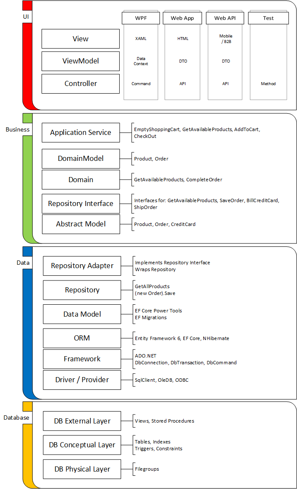

My last post discussed a high-level software architecture breaking down an application into user interface, business, and data layers. That is a very abstract overview, which is open to a lot of interpretation. In this post, I will dive down deeper into the layers and see exactly how these could fit together. Each high-level layer is implemented by smaller focused layers, making 17 in all, at least in this example.
Why 17 layers? Why not 16, or 18? The number is a little bit arbitrary. How many layers are required for your system is highly dependent on your system. No blog post or book can tell you how best to design your system. This is why this is a difficult subject. There isn’t some else you can copy from to say what is best for your system. For some simple systems 17 layers is huge overkill; other systems may require 25, 30, or more layers.
This blog post is meant as an example how these layers might be defined and fit together. Once you decide that “yes, I want to build a 3-teired application”, this article can provide some guidelines to the classes that may need to be implemented and the people that need to be consulted in order to design them.
The purpose of the layering an application (aka breaking it into smaller classes) is to encourage the Single Responsibility Principle. There is a close correlation between applying SRP and determining whom is responsible for controlling that class. The purpose of a layered application is not force a design process on developers, but it is to recognize the individuals (UX designers, business domain experts, and DBAs) that have input on the software and how those individuals (like classes) interact.
Although this article does imply that each layer is owned and controlled by a single person, that is of course never true. The subject matter experts, coders, system architects, and designers must all communicate effectively. The code the team produces should be focused and provide meaning to all stakeholders. And, of course each layer needs to provide effective communication paths with the adjacent layers. Although it is a collaborative effort, the team should be serving the need of one specific person or job role with each class.
This post just gives a mid-level overview of the types of classes you should see in an application and how they fit together. Software design is just drawing boxes on a page to represent classes and lines for dependencies. Make sure the lines go in one direction (no cycles). Make sure the responsibility of each box is well defined, including the single person responsible for controlling the requirements.
If you decide some layers are overkill, they can be collapsed. That is fine; just make sure that is a conscious decision. The reason for collapsing layers is typically that two adjacent layers are controlled by the same person.
To provide extremely strict boundaries each layer could be hosted in its own DLL; however, that is typically overkill. A well-disciplined team can use class naming convention, folder, or namespace location to keep these layers separated.

As I said in my last post, the best place to start when designing a system is at the business layer. This is because it rids you of UI or Data technology concerns and allows you to focus on the business goals, job functions, decisions and actions.
6. Domain Layer
Responsibility: The Domain layer describes the business actions. Each public class that has methods will be a class responsible for a single action. Each method in this class represents a step in that business procedure. These methods maintain the integrity of the business objects, without concerning them selves of the UI or Data layers.
The methods in the Domain Layer typically represent the backbone (or back end) of the business.
Primary Owner: A domain subject mater expert is responsible for this class. The customer should provide this expertise. Typically, this person has some involvement or oversight with the back end systems of the customer. Although this person probably has in-depth knowledge of the customer’s backend systems, the Domain Layer for the applications should be primary based on the business needs and not the structures of those systems or databases.
Dependencies: The Domain Layer will depend on the Domain Model, Repository Interface, and Abstract Model.
5. Domain Model
Responsibility: The Domain Layer will have methods that implement behaviour. Those methods will need to take data as parameters and in some cases return data. Classes should define this data structure.
With object-oriented programming, it is possible to have classes that store data (properties) and define methods on those classes to work with this data. However, this is somewhat a violation of Single Responsibility Principle. Is your class responsible for representing data or does it implement behaviour? A common theme in these 17 layers will be having one class to implement behaviour and another “model” class to represent data.
The Domain Model classes implement the data structures consumed by the Domain layer. The Domain Models (and all models) are completely standalone and have no dependencies. The Domain Model classes are how the Domain layer shares data with the Application Service and possibly higher layers.
The Domain should use Domain Model classes for all parameters. The Domain should never pass a primitive string or integer between layers. This rule is true that all behaviour layers should use model classes as parameters.
The Domain Model properties should be using the same language as the customer would use describing their business. Design the Domain and Domain Model layers before the database. Choose names that make sense to the business, not names that are consistent with an existing database just so that AutoMapper works out-of-the-box. That just leads to an anemic design.
Primary Owner: As with all model layers/classes the owner is the same as the behaviour class, in this case the Domain Layer. The customer’s domain subject mater expert is the primary owner of the Domain Model.
Dependencies: None, as is typical with model classes.
4. Application Service
Responsibility: The Domain layer represents core functionality that is important to the business. The Domain focuses purely on the business needs and does not focus on user experience. An Application Service focuses more on the user experience. It ties the utilitarian methods of the Domain layer into something more intuitive to a user experience.
The Application Service is not a user interface. It is still just code. It is still independent of the UI stack (thick client, web, mobile).
The Application Service provides orchestration of the domain functions. The service can provide a logical order for calling the domain functions. The Application Service normally maintains consistency of user experience (i.e. Unit of Work or transactions).
The Application Service can also implement or call out to infrastructure methods that are not related to the core domain. For example, the users may want to see a receipt in a nicely formatted PDF. It is not the domain layer’s business to provide this. The domain layer just needs to focus on saving the order and perhaps returning a success code or transaction verification number. The Application Service can that that input from the domain layer and turn that into something more usable and appreciated by users and the UI application.
Primary Owner: The customer’s front-end users of the application. Although this layer shouldn’t focus on the UI, the customer’s front-end users can describe what there normal work flow is and the information they need to make decisions.
Dependencies: Domain and Domain Model.
7. Repository Interface
Responsibility: The Domain Layer will need to call into the data layer. However, here is where the Dependency Inversion Principle comes in.
- High-level modules should not depend on low-level modules. Both should depend on abstractions.
- Abstractions should not depend on details. Details should depend on abstractions.
The high-level module (the Domain Layer) should not depend on the data layer, instead on an abstraction. This Repository Interface layer is this abstraction.
The Repository Interface should only contain interfaces. The details of the interfaces should not depend on the lower level details of data layer. The Repository Interface should not be a one-to-one mapping identical to the data layer below. Nor should the Repository Interface be identical to the Domain Layer and Domain Model classes. That would be an anemic design and violation of the second part of the Dependency Inversion Principle.
The business (Domain) layer gets to decide what it needs from the data layer and that forms the definition of the Repository Interfaces. This is an important point, that the Domain layer is driving the Repository Interface layer. The name “Repository” sometimes implies that it is part of data layer, and bound to the database design; it is not.
This Repository Interface layer fits very nicely with the Interface Segregation Principle. The data layer may be shared with many applications and provide access to all the tables in the database. The Data Abstraction forms an interface that is concerned only with the needs for the client (the Domain layer).
Primary Owner: The same as the Domain Layer: the customer’s domain subject matter expert. When this person assists with the Domain Layer they are focused on the behaviour of business. Here with the Repository Interface they focus on the data needs of the business, or requirements from other services.
Dependencies: The Repository Interface layer should be in its own DLL and not depend on any other DLL. The Domain and Repository Adapter layers depend on the Repository Interface.
8. Abstract Model
Responsibility: With every behavioural class with methods comes a layer for the models (parameters) those methods use. The Repository Interface is no different. The Abstract Model defines the classes that are passed to the Repository Interface’s methods.
The Abstract Model may be different than the Domain Model. The Domain Model is the data that needs to be accepted by the outside world (users) and brought into the domain. The Abstract Model is the data that needs to be saved or passed to underlying services.
For example, the Domain Model may need credit card information along with an order. However, at the repository interface level only the credit card number and amount of the order needs passed to a credit card service. The order saved in the database should not permanently store the customer’s credit card number.
One way to approach the Abstract Model is that it may represent the database structure that you wish you had. Whereas, the Data Model and database is the legacy structure to which we must adapt.
Primary Owner: Same as the Repository Interface. Customer’s domain subject matter expert.
Dependencies: None.
9. Repository Adapter
The Repository Adapter is wiring that allows the business and data layers to talk to each other. This layer allows the Repository to “depend on the abstraction” and fill out the other half of the Dependency Inversion Principle mentioned above.
The classes in the Repository Adapter implement the interfaces defined in the Repository Interface. How those classes implement the details is by taking a dependency on the Repository. They adapt or translate the requirements of the business layer to what is available from the Repository.
Each Domain layer class has a single responsibility for completing the tasks required to meet one business goal. The Domain layer class typically defines its data requirements in a single interface in the Repository Interface. A class in the Data Adapter implements that interface and it uses as many classes from the Data Access Layer as it needs. The Repository Adapter might need to make use of multiple Repositories, databases, and/or services to fill the requirements.
Primary Owner: the coder that is responsible for hooking the Repository Interface and Repository together owns the Repository Adapter.
Dependencies: The Repository Adapter will depend on the Repository Interface and Repository layers, and by extension the Abstract Model and Data Model.
10. Repository Layer
The Repository Layer is the highest level in the data layer that has no knowledge of the business (and UI) layers. It provides applications a way to read and write data from the database.
As mentioned in the previous post, the data layer may not be a relational database but instead may be a third party Web API service. In this post, I will limit the conversation to Repository Layer assuming that it wraps a RDBMS. However, the Repository Layer could represent any data store or service.
The Repository Layer is highly dependent on the technology stack below it. When implementing a data access using an Object/Relation Mapper (ORM) framework then the Repository Layer will have a dependency on that ORM DLL.
In order to communicate with the ORM, Model classes need to exist. Methods will exist in the Repository Layer to populate Model objects and send updates back to the database.
The Repository Layer maybe a rather leaky abstraction. It might not hide from the layers above it the ORM type used or the Model classes. In some circumstances, this might be OK. The Repository Adapter layer will hide these details from the higher layers.
For example, using Entity Framework as the ORM, the Repository Layer may comprise of a public class inherited from DbContext. This class has DbSet properties that expose the public Model classes.
However, that is not the only way to implement a Repository Layer. The Repository Layer may choose to hide the underlying models and use alternate public DTOs or interfaces. The Repository Layer may choose to implement data translations to hide technical debt that may exist in the underlying database structure. The Repository layer doesn’t need to be an anemic design over a database designed years ago; it can be a facade offering the database design you wish you had.
The Repository layer can go further than just translating to a slightly different structure. It may implement data integrity rules or record locking rules.
Some data integrity rules may be too difficult to implement as triggers or stored procedures in the database. You want to implement them in a higher programming language.
Record locking is typically a technical detail specific to a RDBMS database design. The record locking details may not exist in a NoSQL Document database or event source service. Therefore, the business layer should not have knowledge or control over the record locking details.
If there are a lot of translation, data integrity, and record locking rules implemented in the “repository layer”, it might be best to break this into two separate layers. Have lower data access layer that just gets data in and out of the database and a higher “data service” layer that implements these rules.
Primary Owner: If the Repository layer is meant to be a “data service” that will be reused from multiple applications, then the owner of Repository data service is system designer. The designer creates a service that can be used by multiple applications, balancing the requirements of all applications it intends to serve.
If the Repository is not meant to be reused, any coder that is familiar with the underlying ORM and the needs of the Repository Adapter may take ownership of this layer. In this case, it might make sense combine the Repository Adapter and Repository. However even in this case, having separate Repository Adapter and Repository layers often yields code that is more readable. The Repository code focuses (Single Responsibility Principle) on the technical details of the ORM and the Repository Adapter can simply deal with the data mapping to the higher (Abstract Model) layer.
Dependencies: The Repository Layer depends on the Model and ORM layers.
11. Data Model
In order to communicate with the ORM, Data Model classes need to exist. Methods will exist in the Repository Layer to populate Data Model objects and send updates back to the database.
The definition of the Data Model classes is typically in the same DLL as the Repository Layer.
The Data Model classes typically do not have methods, only data properties. They should have properties to relate themselves to other parent and child model classes, much as the foreign keys are defined in the DB Conceptual Level. The Repository Layer, not the Data Model, has methods to populate or save the Data Models.
Most ORMs have a code generation tool that will create Data Model classes from the database structure. For example, Entity Framework has EF Power Tools. If the model generator tool is easy to use and does a good job then Data Model class can be easily generated for each project. If the tool is difficult to use, Data Model classes may need to be carefully groomed and shared between projects.
Entity Framework also support an alternate method of maintaining the Data Model classes and database: Code First Migrations. In this mode developers hand write the Data Model classes. The Migration tool will automatically generate the database according to the definition of the Data Model classes.
The overall theme of this and the previous blog post is the business/domain layer is the most important and that the Data layer and database should be trivial technical details. EF Migrations somewhat achieve this by making the database a trivial detail that is auto-generated. If you simply relabel the Repository Layer as the Business Layer and skip the Abstraction, then it is easy to believe that you have a proper 3-teired application.
Using EF Migrations as a replacement for a Domain Layer and Abstractions can yield a decent design for some applications. This is as long as you are willing to take EF and a RDBMS as a dependency in the system architecture. The designs may tend to focus more on the data the business stores instead of the actions and decisions the business makes. Moving to alternate data stores like Web API or event source systems can be difficult without the abstraction layer. As long as you are OK with this, removal of the abstraction layer may be fine.
Primary Owner: Using a tool like EF Power Tools (and the data-first EF workflow) the Data Model is automatically generated from the DB External Layer. Therefore, the owner of the Data Model is the DBA.
Dependencies: No explicit dependency references exist. However, an implicit dependency exists that the ORM must be able to map Model classes to the DB External Layer. So indirectly, the Model depends on the ORM and DB External layers.
12. ORM
The Object/Relation Mapper framework is not something you would write yourself. This would be a third-party library like Entity Framework or NHibernate. This framework populates Objects from the Model layer with Relations from the DB External Layer.
Primary Owner: Third party vendor (e.g. Microsoft)
Dependencies: ORMs are build on top of the programming language’s data Framework Layer, although the ORM should hide that detail from Repository and Data Model layers.
13. Data Framework
Most programming languages have a framework that provides low-level access to the relational databases. In C# and other .NET CLR languages, this is ADO.NET and all the functionality in the System.Data namespace.
Generally, the ORM should hide the fact that this Data Framework exists. They provide a simplistic programming model, which sometimes can sacrifice performance. Occasionally a Repository Layer may want to bypass the ORM and directly interact with the database. In that case, the Repository Layer will directly call into the Data Framework.
Primary Owner: Third party vendor (e.g. Microsoft)
Dependencies: The Data Framework will require a database driver or provider to communicate with a RDBMS.
14. Driver / Provider
I’ve added this layer only for completeness. Like the ORM and Data Framework, this is definitely not something you write yourself. Each proprietary RDBMS vendor (Microsoft SQL Server, MySQL, Oracle, etc) will offer a driver so that programming languages can access their product.
These drivers follow an open standard that the Data Framework can call. The first open standard was ODBC, where vendor’s libraries were referred to as drivers. Later came OLE DB and the term “provider” was used instead.
Primary Owner: Third party vendor (e.g. Microsoft)
Dependencies: Each vendor’s library can have a large number of hidden dependencies. Typically, they call into the operating system’s network stack (e.g. TCP/IP).
15. DB External Layer
Although a database primarily consists of tables, it can be dangerous to allow all applications direct access to the tables. DBAs can add a layer of indirection to the database to control this access. This layer is formed from Views and Stored Procedures in the database. Think of them as just another layer that hides the lower level (table) details.
DBAs and programmers often argue on whether it is best to implement business and/or data integrity rules in the Domain Layer, Repository Layer, or DB External Layer. There is no easy answers here. The answer completely depends on your problem domain, team, and system architecture.
Primary Owner: DBAs design the DB External Layer. Typically, this is done with a focus on securing access to the data.
Dependencies: DB Conceptual Layer
16. DB Conceptual Layer
The DB Conceptual Layer contains all the Tables in the database. This is sometimes referred to as the DB Logical Layer. The DBA the will design the tables and indexes of the relational database to meet the needs of the all the applications that use it.
It is not just one business layer the database needs to support, but also probably many components in the suite. The DBA will apply proper design rules, like third and sixth normal form, to ensure the data structures are proper.
The DB Conceptual Level may also contain constraints and triggers to verify the integrity of the database. Note that these are technical details of the database; the triggers probably should not be implementing business rules of the system, just data integrity rules.
Primary Owner: DBAs design the DB Conceptual Layer. Many concerns are addressed with this layer, including but not limited to drive space optimization and data integrity.
Dependencies: DB Physical Layer
17. DB Physical Layer
The physical layer of the database controls where the data is stored on disk. In a relational database, this is defined by the File Groups and File Streams. The DBA can control which physical file each table and index is stored. Performance can be improved by distributing this over multiple disks.
Primary Owner: DBAs design the DB Physical Layer. The hardware available will drive this, or vise versa.
Dependencies: The file system, which is accessed by the operating system. Hard drive device drivers. That little guy inside you computer with a chisel and stone tablet. Oh, he’s there. Go ahead and check. I’ll wait.
1. View
The View is the presentation layer for the system to the user. It provides the user interface.
A system may have different views for various platforms. For a Windows desktop application, the View likely is a WPF XAML form. For a web application, the View is HTML. Mobile applications use a variety of technologies for the View.
The View should be very dumb. Views should be so simple that there should be no place for bugs to hide. If they need data validation rules, they should call into the Controller for these decisions. Button clicks are also wired up to the Controller.
Primary Owner: UX Designer
Dependencies: Data consumed by the View comes from the ViewModel. Button clicks and other events call into the Controller. The view may need to respond to events raised by the Controller.
2. ViewModel
The ViewModel are the data classes that the View will consume.
The technology stack of the View dictates the design of the ViewModel. In a WPF application, the ViewModel is the DataContext, which is comprised of INotifyPropertyChanged properties and IObservable collections. In a web application, the ViewModel objects are simple Data Transfer Objects (DTOs) that serialize well to JSON.
The Controller creates and populates the ViewModel classes.
Primary Owner: The UX Designer defines the model for the view behaviour.
Dependencies: None
3. Controller
The Controller is an adapter class that allows the View to consume the Application Service layer. The Application Service has no knowledge of the View layers build on top of it. The Views have no direct knowledge of the Application Service layer.
The Controller is specific to the technology of the View. In a web application, the Controller is a Web API that the View can use HTTP methods to call. In WPF, the Controller simply transforms data between the DataContext and Application Service layer.
The Controller is a simple adapter that shuttles calls between the View and Application Service. The Controller should have not logic of its own. For example, when the View needs to determine if data entered by the user is valid or not the View should call the Controller would should forward that call to the Application Service. The Application Service object makes the business decision as to whether or not the data is valid.
Note that an automated integrated test harness can replace user interface layers. Instead of the Controller calling the Application Service and dumbly passing the results to a View, test methods can call the Application Service layer. Instead of have a user interface the test methods verify the Application Service returns the proper values. Of course, every layer can have unit tests that test just one layer; the layers below can be abstracted or mocked.
Primary Owner: The coder responsible for hooking the View Model and Application Service together.
Dependencies: The Controller depends on the Application Service layers. It also depends on the ViewModel.
Appendix A: Cross Cutting Concerns
Before closing out this post, I will briefly touch on some of the infrastructure classes that are not technically part of any single layer, yet are still critical to any production system.
There must be an object mother class responsible for creating the instances of the layers and wiring them together. Often a Dependency Injection (DI) framework helps manage this. This is usually setup early in the top-level EXE’s “main” entry function.
The layers typically need to handle security. There must be a mechanism to identify the users or bots calling into the various layers. Permissions to the various functions on the different layers need to be controlled.
Where there are users, there may be remote users. The system typically needs to offer globalization and localization support, aka multi-lingual support. Although the View can be responsible for much of this, sometimes data layers need to provide product descriptions in the correct language.
Analytics need to be part of any system that comes with support. This should include logging and notification features for when errors or other important system events occur.
Conclusion
The reasons for breaking an application into 3 or 17 layers is to improve the expressiveness of the code base. That makes it easier for developers to approach and learn a large system and maintain it. Each layer (or class) in the system is small, easy to comprehend, and easy to unit test.
Each layer has a single responsibility. Because the same data travels from the database to the View, it can seem as if there is a lot of duplication in the system. However, remember this is not true duplication. Each layer, although possibly similar with others, does have different Single Source Of Truth and Responsibility.